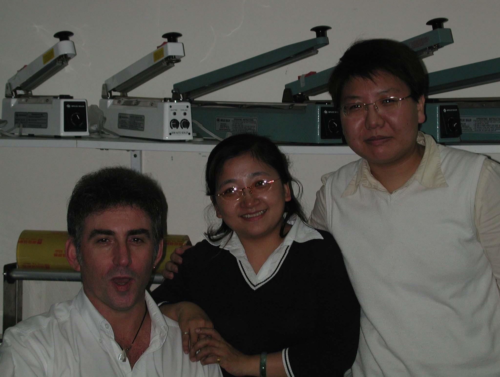

晨達企業股份有限公司 工安
處理工單，協助現場師傅作業與安全事項追蹤；結合安檢經驗與職安訓練，支援現場溝通及工作執行。
PROFILE 2026
求職方向國際業務專員、國貿業務、客戶關係管理、旅遊行銷與活動企劃。

以國際業務與客戶關係為主要職涯方向，具備近 14 年跨領域工作經驗。熟悉英文商務書信、海外客戶開發、進出口流程、產品介紹與現場協調；另以假日副業方式累積旅遊行銷及帶團服務經驗，並具安檢及工安經驗。曾赴加拿大進修英文一年，並參與捷克 INVEX 海外展覽。
跨域優勢結合英文溝通、客戶維繫、產品推廣、第一線服務與現場安全管理經驗。
處理工單，協助現場師傅作業與安全事項追蹤；結合安檢經驗與職安訓練，支援現場溝通及工作執行。
執行安檢值勤與現場安全維護，累積 3 年安檢實務經驗；維持程序一致並即時回應異常。
以假日副業方式推廣旅遊產品、說明行程，並執行帶團與旅客服務。
以假日副業方式執行帶團與旅客服務，協助旅遊產品行銷及客戶溝通。
開發海外客戶、維護既有客戶，執行產品介紹、詢價溝通與追蹤。
處理進出口事務與貿易文件，接觸 PE 伸縮膜進口及塑鋼帶外銷。
客戶開發、足弓墊推廣與中東經銷合約。
電腦線材、客戶開發與捷克 INVEX 海外展覽。
藍牙耳機與 GPS 支架產品、客戶開發。


